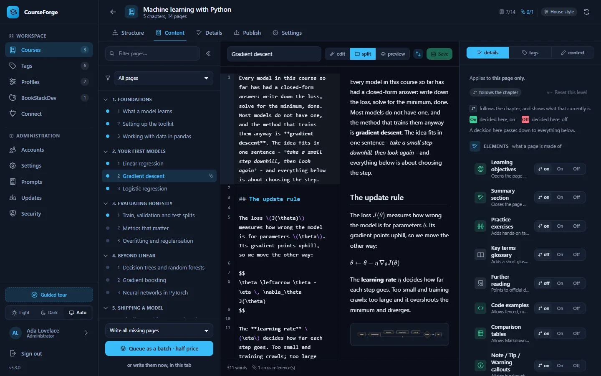
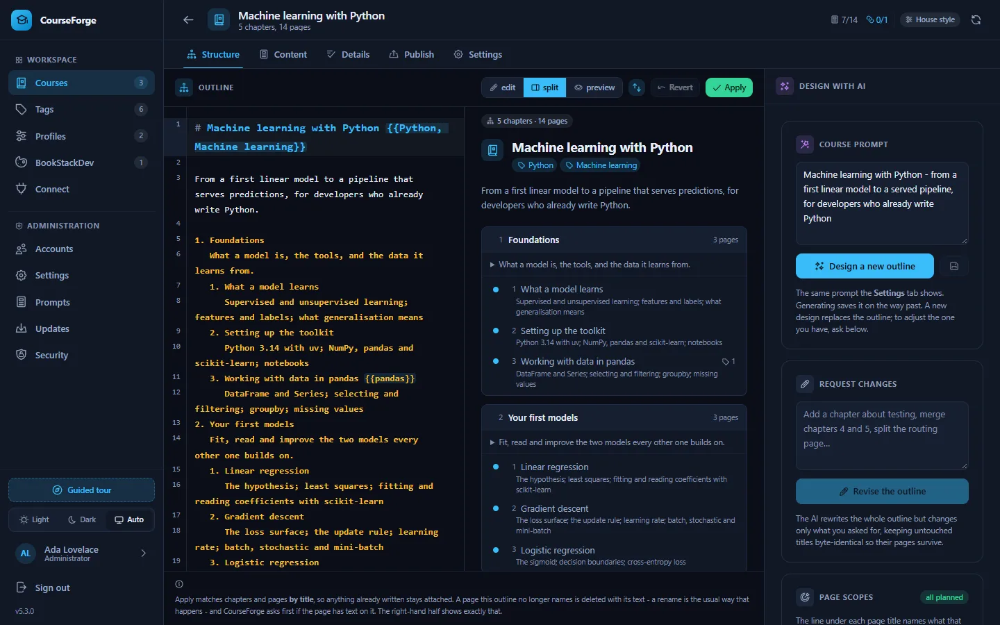
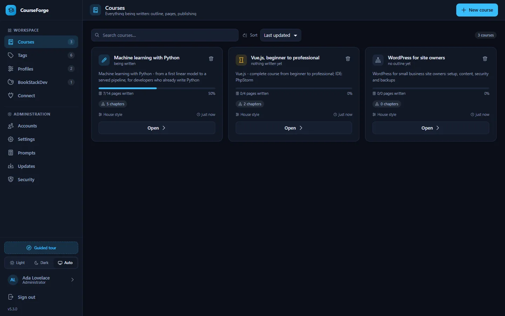
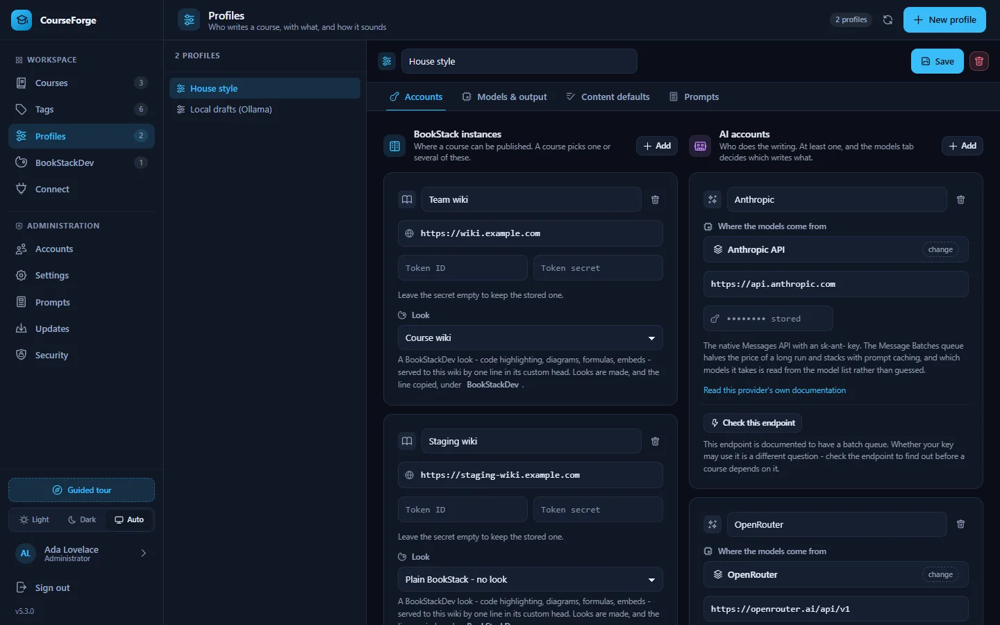

Turn a one-line brief into a complete course
CourseForge is a self-hosted course generator. The AI designs the outline, writes every page and CourseForge publishes the book into BookStack. You steer it from the browser, or from Claude Code and other AI clients.

Everything a course needs, nothing to compile
Copy the folder to a PHP host and open it. No Composer, no npm, no build step, and no configuration file to edit before the first start.
An outline that divides the subject
The AI designs chapters and pages and plans a scope under every page, so no two pages teach the same thing.
Any model you like
Anthropic, OpenAI, Google Gemini, OpenRouter, sixteen OpenAI-compatible gateways, or a local model through Ollama, LM Studio, vLLM or llama.cpp.
Half price in a batch
Write a whole course through the provider's batch queue at about half the price, or in the background from cron. Either way you can close the tab.
Lean prompts, cached
Every page is written from a compact course map that is the same for every page. Prompt caching cuts billed input on a live Anthropic run by about nine tenths.
A real editor
CodeMirror with syntax highlighting, and a preview with Shiki, Mermaid and MathJax. The two halves scroll together.
Publish to one wiki or several
Books, chapters, pages, tags and cross references go into BookStack and stay in sync. A push is a background task that picks up where it stopped.
The whole app over MCP
107 tools let Claude Code, the Claude app, Codex, Cursor, VS Code or Gemini CLI do anything the browser can, including writing pages on your own subscription.
Every prompt editable
48 documented prompt slots, overridable for the whole installation or for one profile. Nothing the AI is told is hidden in code.
Built to be left running
Accounts with roles, invites, an audit log, a security self-check and one-click updates that back up first and roll back if the new version fails.
Two ways to write a course
Let CourseForge call a model with your API key, or connect an AI client and let it do the writing. You can mix the two in one course.
CourseForge writes it
A profile holds your AI account and models. CourseForge designs the outline and writes the pages, live in the browser, in the background, or through a batch queue.
- Runs with the browser closed
- About half price through a batch queue
- Estimate the tokens before you start
Your AI client writes it
Connect Claude Code or another MCP client. It asks CourseForge for each page's brief, writes the page, stores it and moves on.
- Uses your existing subscription; the server spends nothing
- No API key ever reaches the server
- Exactly the same rules as an API-written page
A look around
The application as it ships, in the dark theme it opens with. There is a light theme too, and an automatic one that follows the system.








Find your way around
Start with the introduction and the quick start, or jump straight to the part you need.